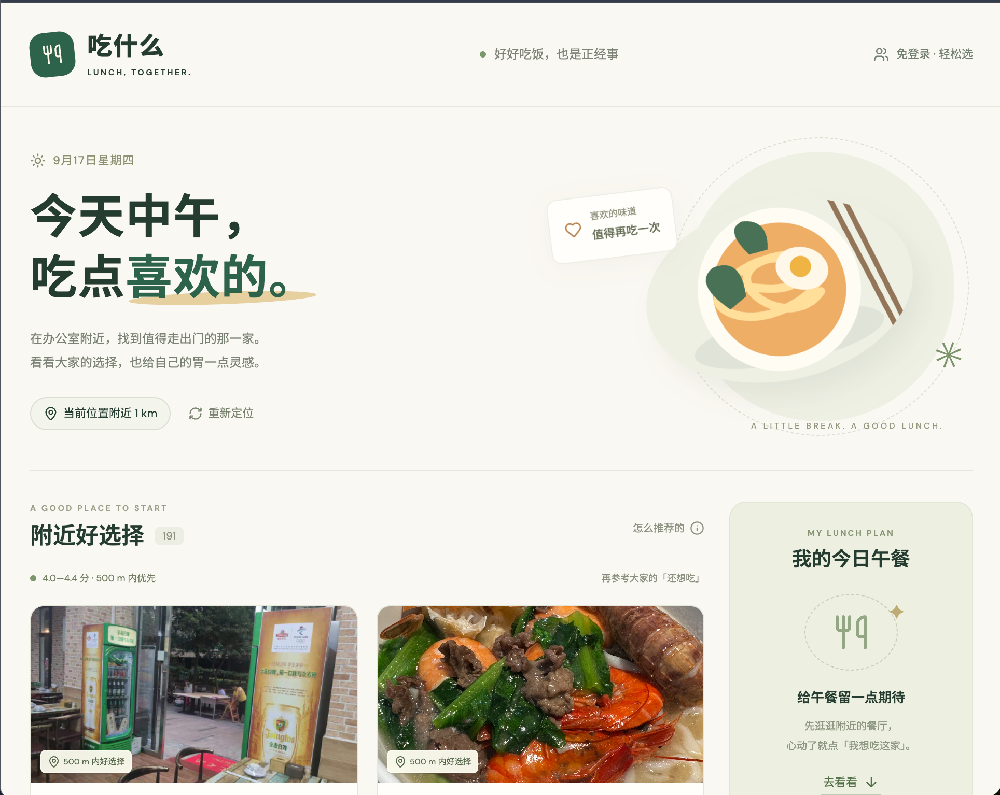

从一个日常问题出发，做出可以使用的答案。这里收录我的工具、实验与持续写作。
轻松管理多台设备间的Skills，妈妈再也不用担心我的Skills找不到啦！

中午不知道该吃什么？快来看看吃点啥。
让你的额度使用情况显而易见，任何闲置设备连上WIFI，即可展示Token用量仪表盘。
轻量级网页笔记工具，侧边栏上的笔记伙伴，支持 Markdown 实时渲染，保存网页URL和标题。
我与世界的交互艺术
以周记方式来咀嚼优质的内容，我们不能只任由信息流经而不留下痕迹。